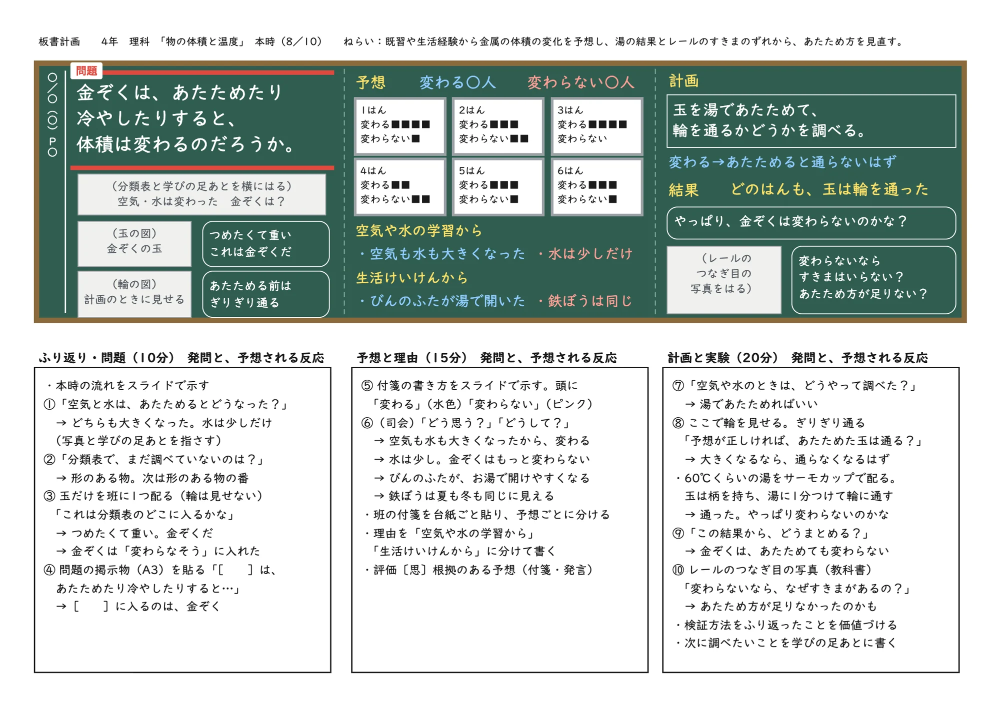
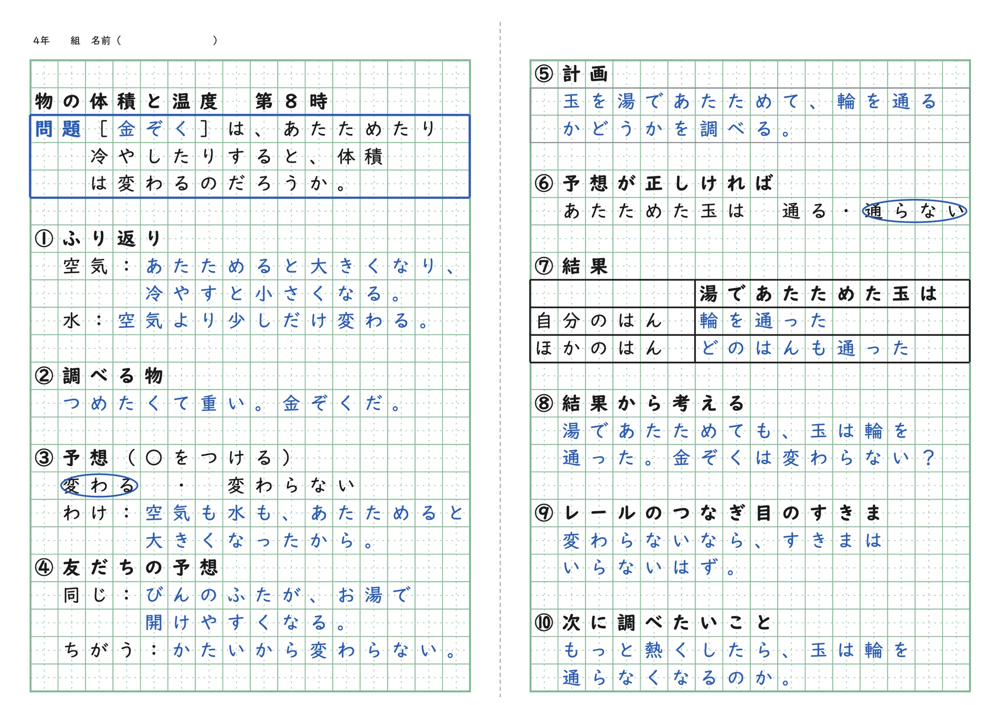
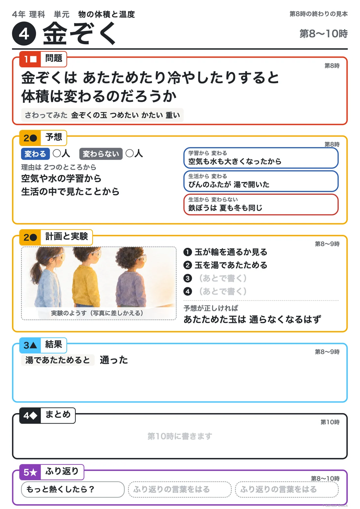

第8時（本時） 第３次 金ぞく①
問題金ぞくは、あたためたり冷やしたりすると、体積は変わるのだろうか
Board

Notebook

Aim
金ぞくは、あたためたり冷やしたりすると体積は変わるのかという問題について、空気や水の学習や生活経験と関係付けて予想し、湯であたためて調べる活動を通して、根拠のある予想を表現するとともに、実験の結果とレールのつなぎ目のすきまとのずれから、あたため方を見直すという次時の見通しをもつことができる。
Assessment
| 観点 | 評価規準 | 方法 |
|---|---|---|
| 思考・判断・表現 | 既習の内容や生活経験と関係付けて、根拠のある予想を表現している。 | 付箋・発言 |
Flow
| 配時 | 学習活動 | 指導上の留意点 |
|---|---|---|
| 3分 | １ 空気と水の実験で分かったことを、写真や学びの足あとを使ってふり返る。 空気も水も、あたためると体積が大きくなって、冷やすと小さくなったね。水は空気より少しだったよ。 | 〇 学習の見通しをもたせるために、本時の流れをスライドで示す。 〇 追究の意識を連続させるために、空気と水の写真と学びの足あとで、変わり方のちがいまで確かめる。 |
| 4分 | ２ 第１次でつくった分類表を見て、本時に調べる物を知る。 （１）分類表で、調べ終わった物と、まだ調べていない物を確かめる。 （２）配られた玉にさわり、何でできているかを考える。 つめたくて重い。これは金ぞくだ。分類表では、金ぞくは「変わらなそう」に入れたよ。 | 〇 追究の計画を思い出させるために、第１次の分類表を掲示し、形のない物（空気・水）は調べ終わり、次は形のある物の番であることを確かめる。 〇 調べる物が金属であることに自分で気づかせるために、金属膨張試験器の玉だけを班に一つずつ渡してさわらせ、「これは分類表のどこに入るかな」と問う。輪はまだ見せない。 |
| 3分 | ３ 空気や水と同じ形の文で、本時の問題をつくる。 | 〇 空気や水と同じ問題で追究してきたことに気づかせるために、空欄のある問題文の掲示物を黒板に貼り、空欄に入る言葉を考えさせる。 |
| 問題金ぞくは、あたためたり冷やしたりすると、体積は変わるのだろうか。 | ||
| 15分 | ４ 問題について予想し、理由を出し合う。 （１）自分の予想と理由を付箋に書く。 （２）班で予想と理由を伝え合う。 （３）班の付箋を黒板に貼り、全体で交流する。 空気も水も、あたためたら大きくなりました。だから、金ぞくもあたためると大きくなると思います。 わたしは、変わらないと思います。水は空気ほど大きくならなかったからです。かたい金ぞくは、もっと変わらないと思います。 びんの金ぞくのふたが開かないとき、お湯であたためると開けやすくなると聞いたことがあります。だから、金ぞくも大きくなると思います。 | 〇 自分の考えをもたせるために、付箋の書き方をスライドで示し、初めに「変わる」（水色）「変わらない」（ピンク）と書かせてから理由を書かせる。 〇 根拠のある予想をさせるために、写真や学びの足あとを指さして理由を考えさせる。書き出せない児童には「空気や水のときはどうだったかな」と問いかける。 〇 全員が考えを話せるように、司会は前時までに決めておき、「どう思う？」「どうしてそう思ったの？」と聞き合わせる。 〇 友だちとの考えのずれに気づかせるために、班の付箋を台紙ごと黒板に貼って予想ごとに分け、理由を「空気や水の学習から」と「生活経験から」に分けて板書する。 評価規準【思考・判断・表現】 既習の内容や生活経験と関係付けて、根拠のある予想を表現している。 （付箋・発言） |
| 12分 | ５ 予想を確かめる実験をする。 （１）空気や水の実験の方法を思い出し、実験の方法を考える。 空気や水のときと同じように、湯であたためて調べればいいと思います。大きくなるなら、玉は輪を通らなくなるはずです。 | 〇 既習の方法を生かして計画を立てさせるために、空気や水の実験の写真を示し、「空気や水のときは、どうやって調べたかな」と問う。 〇 あたためる前とあとを比べられるように、ここで初めて輪を見せ、玉が輪をぎりぎり通ることを確かめる。 〇 予想と結果をつなげるために、「予想が正しければ、あたためた玉は輪を通るかな、通らないかな」と問う。 |
| 計画玉を湯であたためて、輪を通るかどうかを調べる。 | ||
（２）安全に気をつけて、玉を湯であたため、輪を通るかを調べる。 湯につけたのに、玉は輪を通りました。やっぱり金ぞくは変わらないのかな。 | 〇 安全に実験させるために、教師が６０℃くらいの湯をサーモカップに入れて各班に配る。玉は柄を持って湯に１分ほどつけ、輪に通させる。 〇 班ごとの結果を板書し、どの班も玉が輪を通ったことを全員で確かめる。 | |
| 8分 | ６ 実験の結果をふり返り、次時の学習の見通しをもつ。 （１）結果と予想を照らし合わせる。 （２）レールのつなぎ目のすきまの写真を見て、気づいたことを話し合う。 （３）次に調べたいことを学びの足あとに書く。 金ぞくが変わらないなら、どうしてレールのつなぎ目にすきまをあけているのかな。 湯では、あたため方が足りなかったのかも。もっと熱くしたら、通らなくなるのかな。 | 〇 結果を予想と照らし合わせるために、「この結果から、どうまとめる？」と問う。 〇 実験の結果とのずれに気づかせるために、教科書に載っているレールのつなぎ目のすきまの写真を提示し、「金ぞくの体積が変わらないなら、なぜすきまをあけているのだろう」と問う。 〇 次時の見通しをもたせるために、「あたため方が足りなかったのでは」という考えを取り上げ、検証方法についてふり返ったことを価値づける。 |
指導案の展開と同じ中身です。配時は、説明の流れの時間の目安です。
Learning trail

More
金ぞくは、あたためたり冷やしたりすると、体積は変わるのだろうか
場面1 空気と水の学習をふり返る
場面2 分類表を見て、金ぞくの玉にさわる
場面3 空気や水と同じ形の文で、問題をつくる
場面4 予想して、理由を出し合う
場面5 計画を立て、湯であたためて調べる
場面6 結果をふり返り、レールのすきまを見る
器具・準備
手順
結果の見通し 湯であたためても、玉は輪を通る。その結果とレールのつなぎ目のすきまとのずれから、あたため方を見直す。炎で熱して確かめるのは第9時。
湯であたためても、玉は輪を通った。でも、金ぞくの体積が変わらないなら、レールのつなぎ目にすきまはいらないはず。あたため方を見直して、次の時間に確かめる。
もっと熱くしたら、玉は輪を通らなくなるのだろうか。
空気と水について導きだした結論や分類表と関係付け、「金ぞくは、あたためたり冷やしたりすると、体積は変わるのだろうか」という問題を見いだす。 空気や水について導きだした結論や生活経験と関係付けて根拠のある予想を発想し、「大きくなるなら、あたためた玉は輪を通らなくなるはず」と結果を見通して、空気や水と同じ方法で調べる計画を立てている。 湯でも玉が通った結果とレールのつなぎ目のすきまとのずれから、あたため方を見直し、加熱器具を安全に扱いながら結果を記録している。
今日の流れから、結果から考えるまで。電子黒板に映す。レールのつなぎ目の写真は、教科書の写真を入れる枠だけにしてある。
空欄のある問題文と、空欄に重ねて貼る「金ぞく」のカード。
空気、ほかの物は？（分類表）、水、金ぞく。はじめのふり返りと、予想の理由を考えるときに指さす。写真の欄は授業の写真に差しかえる。ふり返りの言葉の欄つき。
話し合いの順番と司会のことば。班に1つ。
全体の交流で、聞く子が「にている」「ちがう」を上げる。
予想と理由の型。その段階の2〜3本だけを出す。